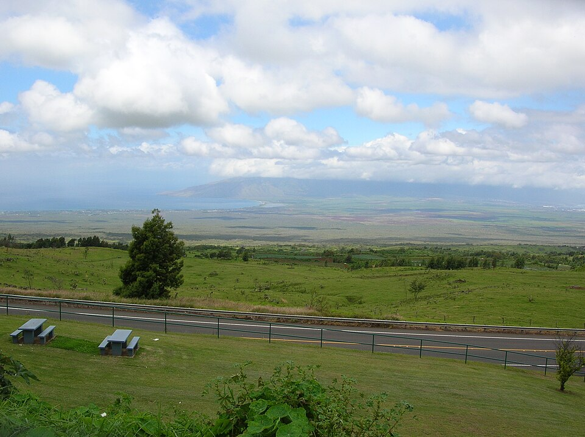

Harold W. Rice Memorial Park
Place: Harold W. Rice Memorial Park, Kula, Maui
Type: Scenic overlook / county park
Namesake: Harold W. Rice, Maui rancher, Territorial Senator, and former Maui County chairman
Story it tells: How a prominent Maui ranching and political family turned one of Harold W. Rice's favorite Upcountry views into a public park overlooking the lands of the family's historic Kaʻonoʻulu Ranch.

Harold W. Rice Memorial Park sits beside Kula Highway at roughly 2,500 feet above sea level, where the slopes of Haleakalā open into one of Upcountry Maui's broadest views. From the small roadside park, the land falls away toward the Central Maui isthmus, with the West Maui Mountains rising in the distance and the coast visible beyond the ranchlands below.
Harold W. "Pop" Rice was born in Honolulu in 1883 into a prominent Hawaiʻi ranching family. His father, William Hyde Rice, developed one of Kauaʻi's major cattle operations, but Harold eventually established his own life on Maui. His position there was strengthened by his marriage to Charlotte McKinney Baldwin, connecting him to the Baldwin family whose sugar, ranching, and business interests dominated Maui's economy during the territorial era.
In 1916, Rice purchased the established Kaʻonoʻulu Ranch from the heirs of Colonel William H. Cornwell. The property had an unusual history of its own. The land had previously been held by a Hawaiian named Keohokolole before passing to Yung Hee, a Chinese immigrant who had arrived in Hawaiʻi as a contract laborer and later became a successful farmer during Kula's nineteenth-century potato boom. Cornwell repeatedly attempted to purchase the property from Yung Hee, who refused to sell. Yung Hee returned to China and became ill. Cornwell traveled all the way to Shanghai to negotiate the purchase personally, reportedly beating a competing offer from Claus Spreckels.
After acquiring the Cornwell estate, Rice expanded Kaʻonoʻulu Ranch by purchasing adjoining lands, including property associated with the Baldwin family's Grove Ranch. The ranch stretched from the upper slopes of Haleakalā toward the South Maui coast. Rice raised cattle and developed cornfields, dairy and poultry operations, trained polo ponies, and established meat markets in Wailuku and Honolulu.
Rice's influence eventually extended far beyond ranching. From 1924 to 1930, he served as chairman and executive officer of the Maui Board of Supervisors, a position roughly comparable to the modern county mayor. In 1931, he entered the Territorial Senate, where he represented Maui for nearly two decades and became an influential member of Hawaiʻi's Republican party. He also served as chairman of the powerful Senate Ways and Means Committee and represented Hawaiʻi at Republican National Conventions.
Rice helped secure support for the establishment of Maui Memorial Hospital, providing the island with a centralized modern hospital. Following World War II, he also became deeply involved in the struggle over the future of Naval Air Station Kahului. The military airfield had been built during the war, but Rice and territorial leaders pushed for a conversion into a civilian airport.
Rice used his position in the Territorial Senate and his political connections in Washington to press the federal government to release the property. In 1947, he introduced Joint Resolution 18 as part of the effort to transfer more than 1,300 acres from federal military control to the Territory of Hawaiʻi. The political positioning and strategy ultimately worked, allowing the former naval air station to develop into the commercial Kahului Airport that operates to this day.
Rice's political career ended just as Hawaiʻi itself was changing. The labor movement, returning World War II veterans, and the growing Democratic Party were beginning to dismantle the political system long dominated by Republican politicians and the islands' major sugar interests. Rice chose not to seek another term in 1947 and returned his attention to ranching. His son, Harold F. "Oskie" Rice, increasingly assumed responsibility for the family's businesses and lands.
Harold W. Rice died in 1962. Three years later, Oskie donated approximately 3.8 acres beside Kula Highway to the local Kiwanis Club in memory of his father. The roadside parcel overlooked the broad Upcountry landscape of Kaʻonoʻulu Ranch and shared a view that the elder Rice had particularly enjoyed during his lifetime.
The Kiwanis Club almost immediately transferred the property to Maui County so that it could become a permanent public park. The county developed parking, restrooms, guardrails, and other facilities, while Kiwanis members participated in early improvements such as clearing vegetation and providing picnic facilities.
Rice Park overlooks a landscape connected to the ranching economy that made Harold Rice wealthy, while the modern Maui visible beyond it reflects some of the infrastructure and political decisions he helped influence. His son's decision to preserve this particular overlook created an unusually personal memorial: Harold W. Rice is remembered through the Upcountry view he loved.